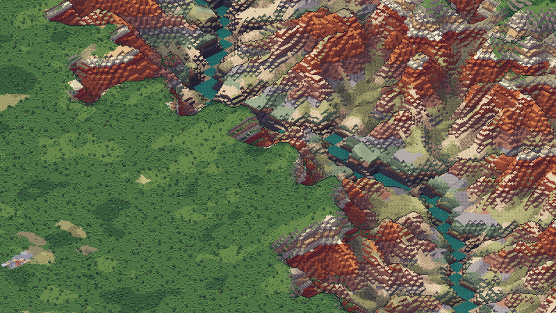
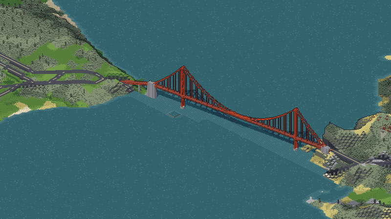
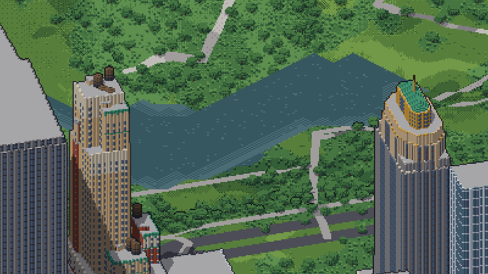
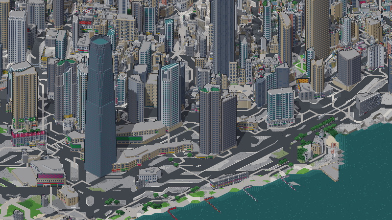
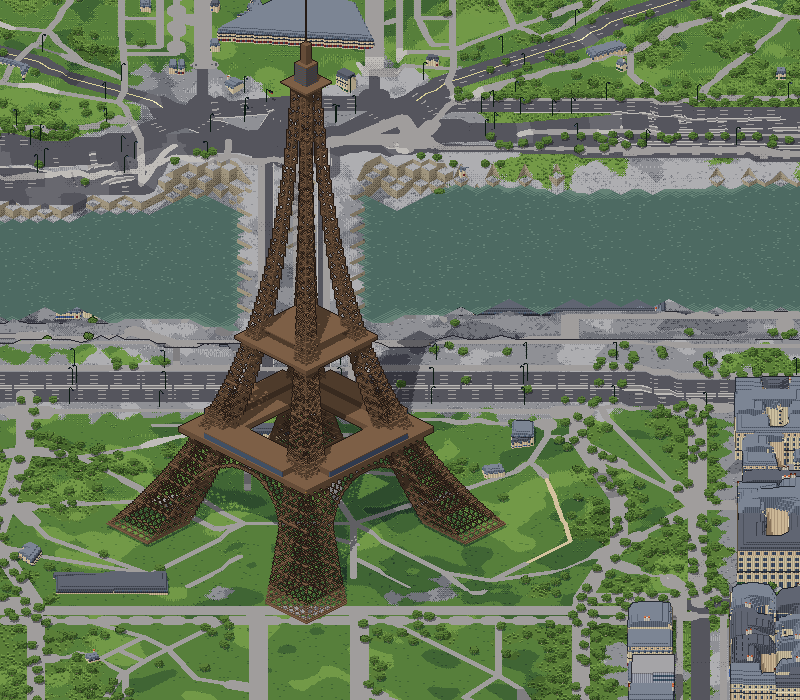
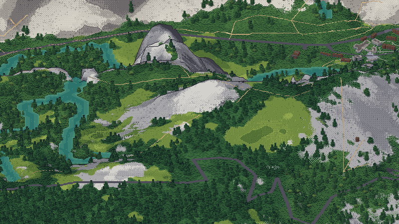
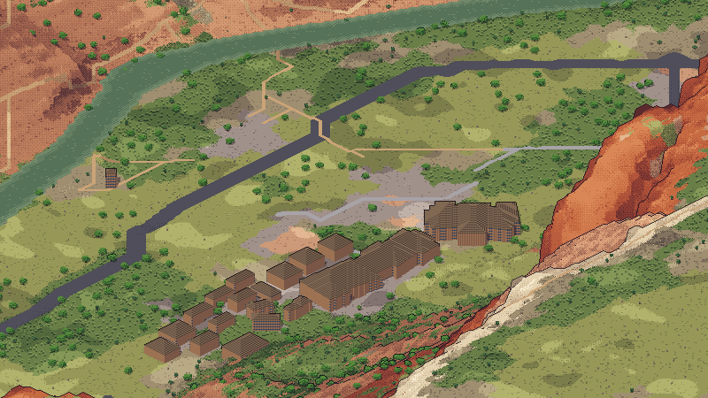
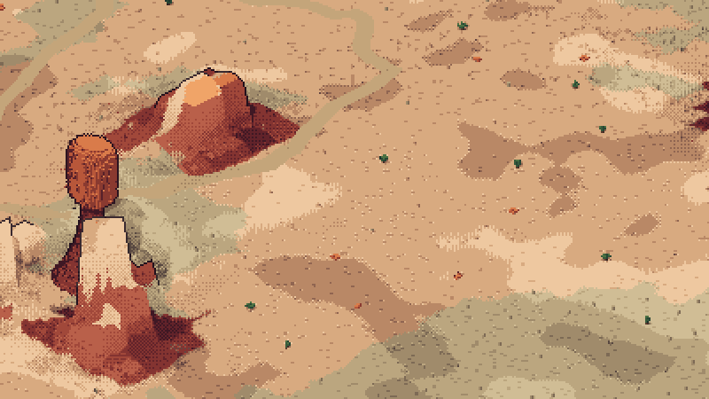
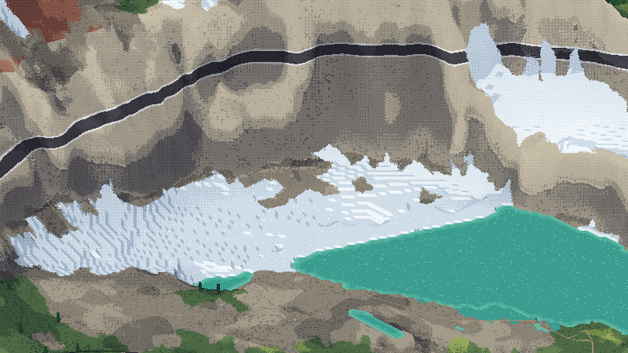

US Southwest
Las Vegas, Hoover Dam and the Grand Canyon, about 410 × 280 km, compressed between its landmarks so you can drive from the Strip to the canyon in minutes.
Each place is built at up to three scales, each a world of its own: flying over it, driving its roads, walking its blocks. Pick one to open it in the viewer.
WASD or drag to pan · arrows drive the rover · Q/E rotate · 1–6 zoom · L next scale, where you stand ·
T day and night · I data sources · H hide the help

Las Vegas, Hoover Dam and the Grand Canyon, about 410 × 280 km, compressed between its landmarks so you can drive from the Strip to the canyon in minutes.

The city block by block from its own building records: Victorians and rowhouses on the hills, Chinatown, Lombard Street, the bridges and the fog.

Manhattan from the city's lot records: brownstones and water towers in the Village, Midtown's towers, Central Park and the East River bridges.

Gion and Higashiyama's machiya and temples under the wooded hills, the Kamo River, and the basin from the air.

Victoria Harbour, Kowloon's tenements and neon, and the whole of Hong Kong Island, from Central's towers to the Peak and Aberdeen.

Central Paris on foot: the Eiffel Tower, Notre-Dame, the Opéra and the Seine's quays between Haussmann's blocks.

Shibuya to Shinjuku on foot, along the Yamanote line: Shinjuku's towers and the signs that light up at night.

The valley between El Capitan and Half Dome, its granite walls drawn as sheer faces, and Cook's Meadow under Yosemite Falls.

The canyon from Zion Lodge, its walls in the strata they are cut through, by elevation.

Stone arches and Balanced Rock standing over the desert, the ground cut away under them.

The high country from Logan Pass to Many Glacier, and the Garden Wall from the air.

The Upper and Midway Geyser Basins: hot pools in rings of colour, steam rising over them, and Old Faithful's boardwalk.